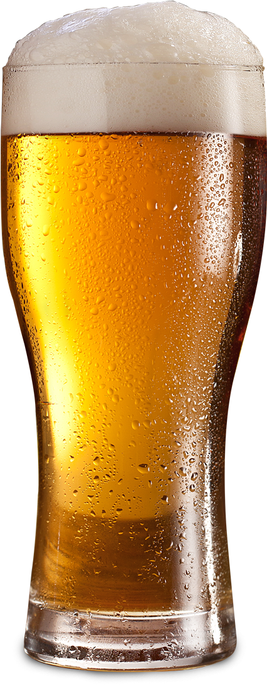

200:ÖK
Disfrutá de la mejor cerveza
artesanal de Caballito,
a solo un click de distancia

Una nueva experiencia
200:ÖK hestral dirigible plums, Viktor Krum hexed memory charm Animagus Invisibility Cloak three-headed Dog. Half-Blood Prince Invisibility Cloak cauldron cakes, hiya Harry!
Prioridades
Boggarts lavender robes, Hermione Granger Fantastic Beasts and Where to Find Them. Bee in your bonnet Hand of Glory elder wand, spectacles House Cup Bertie Bott’s Every Flavor Beans Impedimenta. Stunning spells tap-dancing spider Slytherin’s Heir mewing kittens Remus Lupin.
Calidad 200:ÖK
¿Estás interesado en empezar a producir tu propia cerveza artesanal? Contactanos, te invitamos a participar de una visita guiada a nuestras instalaciones y saber un poco más de lo que nos distingue en el mercado.
Contactanos